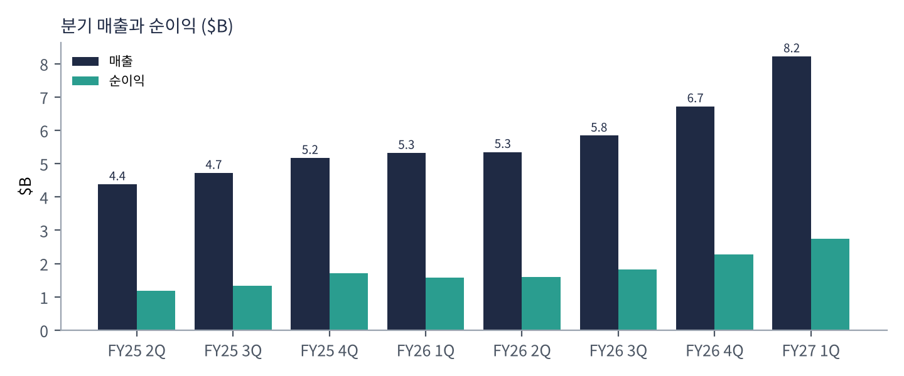
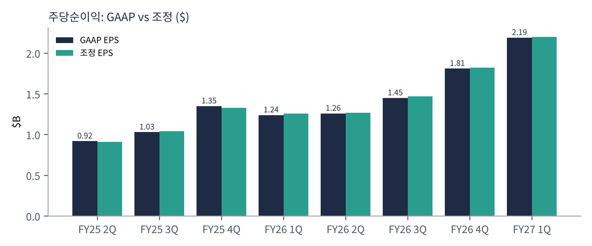
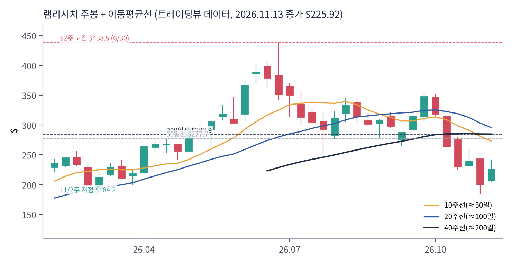
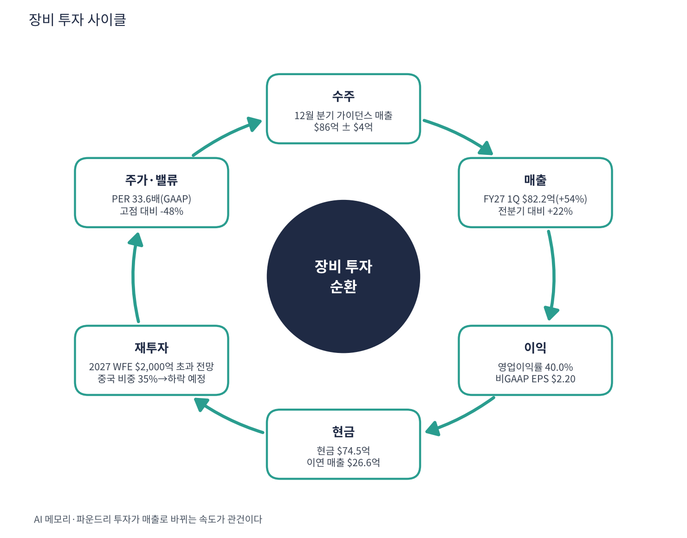

램리서치는 반도체 웨이퍼 위에 회로를 파고(식각) 막을 입히는(증착) 장비와 서비스를 파는 회사다. 이 보고서 시점의 매출은 연 약 $261억(TTM)이다. 9월 분기 매출이 54% 늘고 12월 분기 가이던스도 높였지만, 주가는 6월 고점 대비 절반 가까이 내려온 회사다.
| 항목 | 내용 |
|---|---|
| 종목 | Lam Research (LRCX) · NASDAQ · 반도체 장비 · 회계연도 6월 결산(이번 분기는 FY27 1Q) |
| 시가총액 | 약 $2,822억 · PER 33.6배(GAAP TTM) · P/S 11.24배 (11/13 종가 $225.92) |
| 최근 분기(FY27 1Q, 9월) | 매출 $82.19억(전분기 +22%, 전년 +54%), GAAP EPS $2.19, 비GAAP EPS $2.20. 비GAAP 총이익률 52.4%, 영업이익률 40.2% |
| 가이던스(12월 분기) | 매출 $86억 ± $4억, 비GAAP EPS $2.33 ± $0.15, 총이익률 52.5%, 영업이익률 40.5% |
| 현금·부채 | 현금 약 $74.5억(실적 자료), 총차입금 약 $37억(스캐너), 이연 매출 $26.6억, TTM 잉여현금 약 $65억 |
| 업황 | 경영진은 2027년 웨이퍼 장비(WFE) 시장이 $2,000억을 넘을 것으로 전망(보도) |
| 다음 일정 | FY27 2Q 실적 2027.1.27 예정(트레이딩뷰) |
| 직책 | 인물 | 역할·특징 |
|---|---|---|
| CEO | 팀 아처(Tim Archer) | 실적 발표를 주도하는 최고경영자(보도) |
경영 스타일: '장비 사이클 정점에 인력·설비를 무리하게 늘리지 않고 이익률을 지킨다'. 영업이익률이 40%로 올라서도 다음 분기 가이던스를 40.5%로 제시했다. 중국 비중은 35%로 높지만 경영진은 12월 분기에 이 비중이 낮아질 것이라고 밝혔다(보도).
메모리 적층(NAND·HBM)과 게이트올어라운드 같은 새 구조에서 식각·증착 공정 수가 늘어나는 것이 수요를 키운다.
AI 메모리·파운드리 투자가 늘면 장비 수주가 먼저 늘어난다. 경영진은 2027년 WFE가 $2,000억을 넘을 것으로 본다(보도).
| 분기 | 매출 | 순이익 | EPS | 조정 EPS | 특이 사항 |
|---|---|---|---|---|---|
| FY25 2Q | $43.8억 | $11.9억 | 0.92 | 0.91 | |
| FY25 3Q | $47.2억 | $13.3억 | 1.03 | 1.04 | |
| FY25 4Q | $51.7억 | $17.2억 | 1.35 | 1.33 | |
| FY26 1Q | $53.2억 | $15.7억 | 1.24 | 1.26 | |
| FY26 2Q | $53.5억 | $15.9억 | 1.26 | 1.27 | 매출 +22% |
| FY26 3Q | $58.4억 | $18.2억 | 1.45 | 1.47 | |
| FY26 4Q | $67.2억 | $22.8억 | 1.81 | 1.82 | 매출 +30% |
| FY27 1Q | $82.2억 | $27.5억 | 2.19 | 2.20 | 매출 +54%, 영업이익률 40.0% |


흐름 요약: 분기 매출은 $43.8억에서 $82.2억으로 늘었다. 성장률은 FY26 2Q +22%, 3Q +24%, 4Q +30%, FY27 1Q +54%로 가속했다. 순이익은 $11.9억에서 $27.5억으로 늘었다. GAAP와 조정 EPS 격차는 $0.01~0.04로 작다. 분기 표는 회계연도 기준이며 트레이딩뷰·스캐너 값이다. 영업이익과 분기 설비투자는 구하지 못해 표에서 뺐다.
| 구분 | 비중 | 비고 |
|---|---|---|
| 메모리 | 46% | 9월 분기 장비 매출 기준(보도) |
| 파운드리 | 46% | 게이트올어라운드·첨단 로직 |
| 로직·기타 | 8% | |
| 중국 | 35% | 12월 분기에 낮아질 것으로 회사가 밝힘(보도) |
메모리와 파운드리가 고객 수요의 대부분을 차지한다. 이연 매출은 $26.6억이다. 제품·서비스별 세부 매출은 이 자료에서 구하지 못했다.
램리서치는 '반도체 미세화·적층이 커질수록 식각·증착 공정이 늘어난다'는 구조에 올라타 있다.
| 축 | 최근 움직임 |
|---|---|
| AI 메모리 | 적층 메모리 투자 확대, 메모리 비중 46% |
| 첨단 로직 | 게이트올어라운드 전환 수혜 |
| 위험 | 중국 비중 35%, 수출 규제 |
| 가이던스 | 12월 분기 매출 $86억 ± $4억 |

| 이동평균 | 값 | 종가 대비 | 해석 |
|---|---|---|---|
| 5일선 | $227.86 | -0.9% | 현재가가 아래 |
| 20일선 | $234.35 | -3.6% | 현재가가 아래 |
| 50일선 | $277.66 | -18.6% | 현재가가 아래 |
| 100일선 | $300.71 | -24.9% | 현재가가 아래 |
| 200일선 | $283.87 | -20.4% | 현재가가 약 20% 아래 |
주봉 흐름: 2025년 9월 $128~146 → 2026년 1월 $218~233 → 3월 $199~228 → 6월 고점 $438.5 → 9월 $288~347 → 10월 $230~264 → 11월 둘째 주 $184(저점) → 11/13 주 $225.9. 모든 이동평균선이 현재가 위에 있다.
| 규칙 | 기준 | 현재 값 | 신호 |
|---|---|---|---|
| 장기 추세 필터 | 종가 vs 200일선 | $225.92 < $283.87 | 매도 |
| 중장기 교차 | 50일선 vs 200일선 | $277.66 < $283.87 | 매도 |
| 단기 교차 | 20일선 vs 50일선 | $234.35 < $277.66 | 매도 |
| 돈키언 채널 | 55일 고가 $352.56 / 저가 $184.24 | 중간값 $268.40 아래 | 매도 |
| 1개월 모멘텀 | 21거래일 수익률 | -18.6% (기준 $277.46) | 매도 |
| 3개월 모멘텀 | 63거래일 수익률 | -34.3% (기준 $343.84) | 매도 |
| 6개월 모멘텀 | 126거래일 수익률 | -20.7% (기준 $284.72) | 매도 |
| 12개월 모멘텀 | 252거래일 수익률 | +40.0% (기준 $161.42) | 매수 |
| 종합 (8개 평균) | -0.75 | 강한 매도 |
해석: 8개 신호 중 7개가 매도, 12개월 모멘텀만 매수(점수 -0.75)다. 14일 ATR $17.04 (7.5%)로 변동폭이 크다.
| 가격 | 무엇이 바뀌나 | 의미 |
|---|---|---|
| $234.4 돌파 | 20일선 | 20/50 신호는 50일선($277.7)도 넘어야 매수로 전환 |
| $268.4 돌파 | 돈키언 중간값 | 채널 신호 매도 → 매수 |
| $277.5 돌파 | 1개월 기준가 | 1개월 모멘텀 매도 → 매수 |
| $283.9 돌파 | 200일선 | 장기 추세 신호 매도 → 매수 |
| 구분 | 가격대 | 근거 |
|---|---|---|
| 저항 1 | $234 ~ 278 | 20일선 $234.4, 50일선 $277.7 |
| 저항 2 | $284 ~ 301 | 200일선 $283.9, 100일선 $300.7 |
| 지지 1 | $184 | 11월 둘째 주 저점 |
| 하방 | $184 이탈 시 | 55일 저점 $184.2 아래는 직전 기준 가격대 없음 |
7개 신호가 매도라 신규 진입은 보류한다. 20일선($234)과 200일선($284)을 되찾고 신호가 바뀌면 계획 비중의 30%만 진입한다. 이미 보유 중이면 $184 종가 이탈 시 정리한다. 2027.1.27 실적이 확인 지점이다.
| 악재 요인 | 내용 | 강도 |
|---|---|---|
| 사이클 정점 우려 | 매출 성장 +54%인데 주가는 고점 대비 -48% | 높음 |
| 중국 비중 | 매출의 35%가 중국, 수출 규제 영향(보도) | 중간 |
| 밸류에이션 | PER 33.6배, EV/EBITDA 약 27.6배 | 중간 |
| 고객 집중 | 메모리·파운드리 두 부문이 92% | 중간 |
| 추세 | CTA -0.75, 7개 신호 매도 | 높음 |
| 티커 | 회사 | 시가총액 | PER(TTM) | PEG | P/S | EPS 성장(YoY) |
|---|---|---|---|---|---|---|
| LRCX | 램리서치 | $282B | 33.6배 | 0.70 | 11.24배 | +48% |
| AMAT | 어플라이드 머티어리얼즈 | $294B | 29.4배 | 0.65 | 8.83배 | +46% |
| KLAC | KLA | $198B | 38.1배 | 1.49 | 14.23배 | +26% |
| TER | 테라다인 | $39B | 28.6배 | 0.13 | 8.31배 | +217% |
| ASML | ASML | $565B | 36.8배 | 0.71 | 12.53배 | +52% |
| MU | 마이크론 | $881B | 10.5배 | – | 6.88배 | +879% |
PEG는 트레이딩뷰 PER ÷ GAAP EPS 성장률(내 계산)이다. TER·MU는 기저 효과로 성장률이 비정상적으로 커서 PEG를 비교에 쓰기 어렵다(MU는 산출 제외).
비교 결론: LRCX의 PEG 0.70은 AMAT(0.65)·ASML(0.71)과 비슷하고 KLAC(1.49)보다 낮다. P/S는 동종 중 높은 편이다.
램리서치는 현금이 차입금보다 많은 순현금 회사다. 현금 약 $74억, 총차입금 약 $37억이다.
| 지표 | 값 | 계산·출처 | 해석 |
|---|---|---|---|
| 현금 등 | 약 $74억 | 스캐너 | 실적 자료의 현금 $74.5억과 일치 |
| 총차입금 | 약 $37억 | 스캐너 | 순현금 약 $37억 |
| TTM 잉여현금흐름 | 약 $65억 | 스캐너 | 시총 대비 2.3% |
| TTM EBITDA | 약 $101억 | 스캐너 | EBITDA 마진 약 39%(TTM 매출 $261억 기준, 내 계산) |
| 기준 | 값 | 비고 |
|---|---|---|
| P/S (TTM) | 11.24배 | 스캐너. TTM 매출 $261.3억 기준 내 계산은 10.8배 |
| P/FCF | 약 43배 | 시총 $2,822억 ÷ TTM 잉여현금 $65억(내 계산) |
| 동종 | AMAT 8.8, KLAC 14.2, TER 8.3, ASML 12.5, MU 6.9 | 11/13 스캐너 |
해석: P/S는 장비 동종 중 KLAC 다음으로 높다. 스트레스 가정(내 가정): 12월 분기 가이던스 EPS $2.33을 4배한 연환산 $9.32에 PER 20배면 $186(-18%), 25배면 $233(+3%), 30배면 $280(+24%)이다. 현재가는 PER 약 24배에 해당해 장비 사이클 정점 우려가 일부 반영된 수준이다.
| 지표 | 값 | 판정 |
|---|---|---|
| PER (GAAP TTM) | 33.6배 | 트레이딩뷰, GAAP TTM EPS $6.72 |
| PER (조정 TTM) | 33.4배 | 최근 4분기 조정 EPS 합 $6.76(내 계산) |
| EV / EBITDA | 약 27.6배 | EV ≈ 시총 $2,822억 + 차입금 $37억 − 현금 $74억 = $2,785억, ÷ TTM EBITDA $101억(내 계산) |
| 방식 | PER | EPS 성장률 | PEG | 판정 |
|---|---|---|---|---|
| 트레이딩뷰 (GAAP TTM) | 33.6배 | +48.1% | 0.70 | 투자 적격 |
| 조정 EPS 기준 | 33.4배 | +48.9% | 0.68 | 투자 적격 |
| 조정 TTM $6.76 ÷ 직전 TTM $4.54 | – | – | – | 직전: FY25 2Q 0.91 + 3Q 1.04 + 4Q 1.33 + FY26 1Q 1.26 |
판정: PEG 0.70으로 기준(1.0) 이하 투자 적격, 적극 매수 기준(0.5)에는 못 미침. 12월 분기 가이던스 EPS $2.33은 전년 같은 분기 대비 큰 증가여서 성장률은 당분간 높게 유지된다. 다만 성장률은 장비 사이클 정점에서 급격히 꺾일 수 있다.

램리서치의 사이클은 수주 → 매출 → 이익 → 현금 → 재투자다. 대부분의 고리가 강하고, 약한 고리는 주가·밸류다.
| 고리 | 현재 숫자 | 고리 강도 | 약해지는 신호 |
|---|---|---|---|
| ① 수주 | 12월 분기 매출 가이던스 $86억 | 강함 | 가이던스 하향 |
| ② 매출 | FY27 1Q +54% | 강함 | 성장률 둔화 |
| ③ 이익 | 영업이익률 40.0%, EPS $2.20 | 강함 | 마진 하락 |
| ④ 현금 | TTM 잉여현금 약 $65억 | 강함 | 이연 매출 감소 |
| ⑤ 재투자 | 2027 WFE $2,000억 전망 | 진행 | 고객 투자 연기 |
| ⑥ 주가·밸류 | 6월 고점 대비 -48% | 약함 | 실적 호조에도 주가 하락 지속 |
구조: ①~④가 강한데 ⑥만 약하다. 실적이 좋아도 주가가 내려가는 것은 시장이 사이클 정점을 의심한다는 신호다.